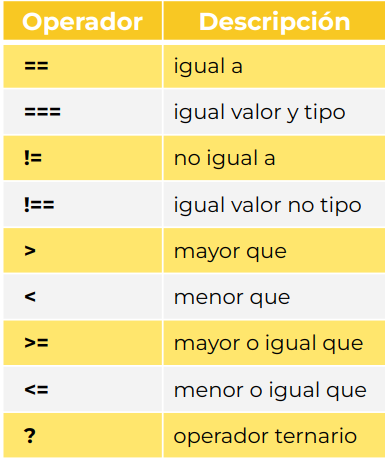

Un operador de comparación compara sus operandos y devuelve un valor lógico en función de si la comparación es verdadera (true) o falsa (false).
Los operandos pueden ser valores numéricos, de cadena, lógicos u objetos. Las cadenas se comparan según el orden lexicográfico estándar.
En la mayoría de los casos, si los dos operadores no son del mismo tipo, JavaScript intenta convertirlos a un tipo apropiado para la comparación. Este comportamiento generalmente resulta en comparar los operadores numéricamente.
Al escribir un programa necesitamos establecer condiciones o decisiones, a partir de las cuales el navegador realiza una acción “A” si se cumple una condición o una acción “B” si no se cumple. Este es el primer tipo de estructura de control que analizaremos.
El más conocido de estos mecanismos de estructura de control es el if (si condicional). Podemos indicar que se tome un camino sólo si se cumple la condición que establezcamos. Si no se cumple no se ejecuta nada y el programa sigue su curso.
Revisa el archivo 01-condicional.js para ver algunos ejemplos en acción.